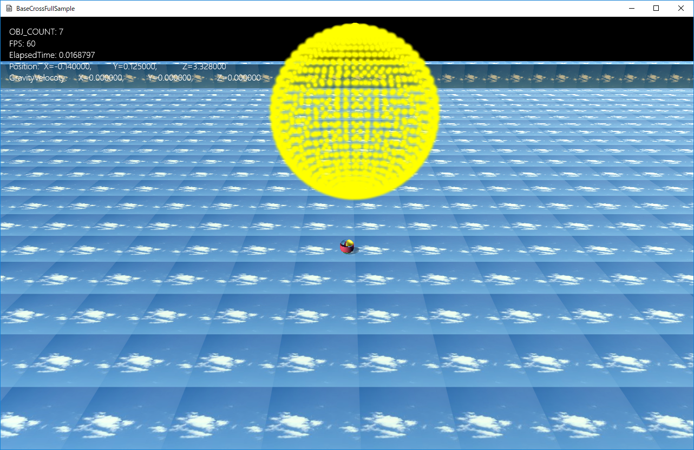
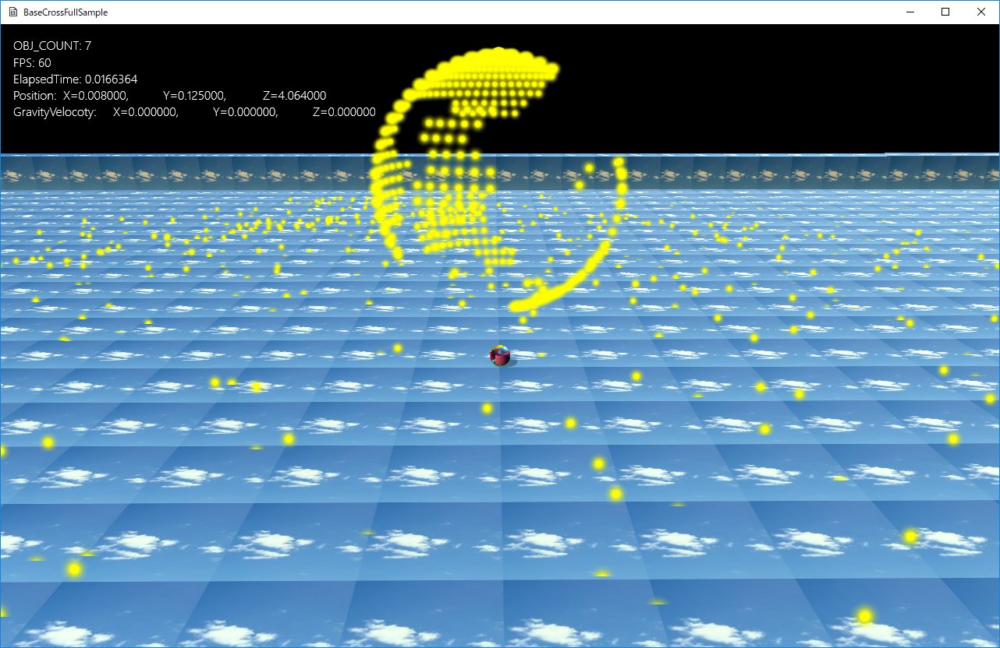

図1305a
中央で回転する球は点の集合です。プレイヤーで当たってみましょう。
図1305b
void PointsBall::OnCreate() {
vector<VertexPositionNormalTexture> vertices;
vector<uint16_t> indices;
//球体を作成
MeshUtill::CreateSphere(1.0f, 28,vertices, indices);
for (auto& v : vertices) {
LocalData tempLocalData;
tempLocalData.m_LocalPosition = v.position;
//各頂点をインスタンスの位置に設定
m_LocalDataVec.push_back(tempLocalData);
}
//描画用メッシュの作成
float helfSize = 0.04f;
Col4 col(1.0f, 1.0f, 0.0f, 1.0f);
//頂点配列
vector<VertexPositionColorTexture> meshVertices = {
{ VertexPositionColorTexture(Vec3(-helfSize, helfSize, 0),col, Vec2(0.0f, 0.0f)) },
{ VertexPositionColorTexture(Vec3(helfSize, helfSize, 0),col, Vec2(1.0f, 0.0f)) },
{ VertexPositionColorTexture(Vec3(-helfSize, -helfSize, 0),col, Vec2(0.0f, 1.0f)) },
{ VertexPositionColorTexture(Vec3(helfSize, -helfSize, 0),col, Vec2(1.0f, 1.0f)) },
};
//インデックス配列
vector<uint16_t> meshIndex = { 0, 1, 2, 1, 3, 2 };
//2次元平面とする（頂点数が少ないため）
m_MeshRes = MeshResource::CreateMeshResource(meshVertices, meshIndex, true);
//全体の位置関連
auto ptrTransform = GetComponent<Transform>();
ptrTransform->SetScale(Vec3(m_Scale));
ptrTransform->SetRotation(Vec3(0));
ptrTransform->SetPosition(m_Position);
//描画コンポーネントの追加（インスタンス描画）
auto PtrDraw = AddComponent<PCTStaticInstanceDraw>();
PtrDraw->SetMeshResource(m_MeshRes);
PtrDraw->SetTextureResource(L"SPARK_TX");
PtrDraw->SetDepthStencilState(DepthStencilState::Read);
//各頂点ごとに行列を作成
for (auto& v : m_LocalDataVec) {
Mat4x4 tempMat;
tempMat.affineTransformation(
Vec3(1.0f),
Vec3(0.0f),
Quat(),
v.m_LocalPosition
);
//インスタンス描画の行列として設定
PtrDraw->AddMatrix(tempMat);
}
SetAlphaActive(true);
}
//球体を作成
MeshUtill::CreateSphere(1.0f, 28,vertices, indices);
for (auto& v : vertices) {
LocalData tempLocalData;
tempLocalData.m_LocalPosition = v.position;
//各頂点をインスタンスの位置に設定
m_LocalDataVec.push_back(tempLocalData);
}
struct LocalData {
LocalState m_State;
Vec3 m_LocalPosition;
Mat4x4 m_FixedMatrix;
Vec3 m_Velocity;
LocalData() :
m_State(LocalState::Roll),
m_LocalPosition(0.0f),
m_FixedMatrix(),
m_Velocity(0.0f)
{}
};
enum class LocalState {
Roll,
Down,
Fix
};
//各頂点をインスタンスの位置に設定
m_LocalDataVec.push_back(tempLocalData);
//描画用メッシュの作成
float helfSize = 0.04f;
Col4 col(1.0f, 1.0f, 0.0f, 1.0f);
//頂点配列
vector<VertexPositionColorTexture> meshVertices = {
{ VertexPositionColorTexture(Vec3(-helfSize, helfSize, 0),col, Vec2(0.0f, 0.0f)) },
{ VertexPositionColorTexture(Vec3(helfSize, helfSize, 0),col, Vec2(1.0f, 0.0f)) },
{ VertexPositionColorTexture(Vec3(-helfSize, -helfSize, 0),col, Vec2(0.0f, 1.0f)) },
{ VertexPositionColorTexture(Vec3(helfSize, -helfSize, 0),col, Vec2(1.0f, 1.0f)) },
};
//インデックス配列
vector<uint16_t> meshIndex = { 0, 1, 2, 1, 3, 2 };
//2次元平面とする（頂点数が少ないため）
m_MeshRes = MeshResource::CreateMeshResource(meshVertices, meshIndex, true);
//全体の位置関連
auto ptrTransform = GetComponent<Transform>();
ptrTransform->SetScale(Vec3(m_Scale));
ptrTransform->SetRotation(Vec3(0));
ptrTransform->SetPosition(m_Position);
//描画コンポーネントの追加（インスタンス描画）
auto PtrDraw = AddComponent<PCTStaticInstanceDraw>();
PtrDraw->SetMeshResource(m_MeshRes);
PtrDraw->SetTextureResource(L"SPARK_TX");
PtrDraw->SetDepthStencilState(DepthStencilState::Read);
//各頂点ごとに行列を作成
for (auto& v : m_LocalDataVec) {
Mat4x4 tempMat;
tempMat.affineTransformation(
Vec3(1.0f),
Vec3(0.0f),
Quat(),
v.m_LocalPosition
);
//インスタンス描画の行列として設定
PtrDraw->AddMatrix(tempMat);
}
SetAlphaActive(true);
void PointsBall::OnUpdate() {
//ステートのUpdate
UpdateState();
//各インスタンスのUpdate
UpdateInstances();
}
//ステートのUpdate
void PointsBall::UpdateState() {
if (m_MatVec.size() != m_LocalDataVec.size()) {
//m_MatVecがまだ初期化されてない可能性がある
return;
}
//各定数
const float baseY = m_Scale * 0.02f;
const float velocityPower = 3.0f;
const Vec3 gravity(0, -9.8f, 0);
float elapsedTime = App::GetApp()->GetElapsedTime();
auto playerSh = GetStage()->GetSharedGameObject<Player>(L"Player");
auto playerPos = playerSh->GetComponent<Transform>()->GetWorldPosition();
//各頂点でループ
for (size_t i = 0; i < m_LocalDataVec.size(); i++) {
switch (m_LocalDataVec[i].m_State) {
case LocalState::Roll:
//回転している状態
{
auto len = length(playerPos - m_MatVec[i].transInMatrix());
if (len < 0.4f) {
//lenが0.4未満なら衝突してると判断
//ステートを変更
//衝突していたら球から飛び出すように速度を設定
m_LocalDataVec[i].m_State = LocalState::Down;
m_LocalDataVec[i].m_Velocity = playerPos - m_MatVec[i].transInMatrix();
m_LocalDataVec[i].m_Velocity.normalize();
m_LocalDataVec[i].m_Velocity.y = 1.0f;
m_LocalDataVec[i].m_Velocity *= velocityPower;
}
}
break;
case LocalState::Down:
//落下中の状態
if (m_MatVec[i].transInMatrix().y <= baseY) {
//落下終了
m_LocalDataVec[i].m_State = LocalState::Fix;
//終了時の行列を保存
//Y値を0.1にする
m_MatVec[i]._42 = baseY;
//m_LocalDataVecとm_MatVecは各インスタンスは同じインデックスである
m_LocalDataVec[i].m_FixedMatrix = m_MatVec[i];
}
else {
m_LocalDataVec[i].m_Velocity += gravity * elapsedTime;
m_LocalDataVec[i].m_LocalPosition += m_LocalDataVec[i].m_Velocity * elapsedTime;
}
break;
case LocalState::Fix:
//落下終了の状態
break;
}
}
}
//lenが0.4未満なら衝突してると判断
//ステートを変更
//衝突していたら球から飛び出すように速度を設定
m_LocalDataVec[i].m_State = LocalState::Down;
m_LocalDataVec[i].m_Velocity = playerPos - m_MatVec[i].transInMatrix();
m_LocalDataVec[i].m_Velocity.normalize();
m_LocalDataVec[i].m_Velocity.y = 1.0f;
m_LocalDataVec[i].m_Velocity *= velocityPower;
if (m_MatVec[i].transInMatrix().y <= baseY) {
//終了時の行列を保存
//Y値を0.1にする
m_MatVec[i]._42 = baseY;
//m_LocalDataVecとm_MatVecは各インスタンスは同じインデックスである
m_LocalDataVec[i].m_FixedMatrix = m_MatVec[i];
void PointsBall::UpdateInstances() {
float elapsedTime = App::GetApp()->GetElapsedTime();
auto ptrDraw = GetComponent<PCTStaticInstanceDraw>();
auto camera = OnGetDrawCamera();
//カメラのレイを作成しておく
auto lay = camera->GetAt() - camera->GetEye();
lay.normalize();
Quat qtCamera;
//回転は常にカメラを向くようにする
qtCamera.facing(lay);
auto ptrTransform = GetComponent<Transform>();
//全体を回転させる
auto worldQt = ptrTransform->GetQuaternion();
Quat spanQt(Vec3(0, 1, 0), elapsedTime);
worldQt *= spanQt;
ptrTransform->SetQuaternion(worldQt);
//行列の配列をクリア
m_MatVec.clear();
Mat4x4 worldMat;
for (auto& v : m_LocalDataVec) {
if (v.m_State == LocalState::Fix) {
//落下終了の状態
worldMat.affineTransformation(
v.m_FixedMatrix.scaleInMatrix(),
Vec3(0.0f),
qtCamera,
v.m_FixedMatrix.transInMatrix()
);
}
else {
Mat4x4 localMat;
localMat.affineTransformation(
Vec3(1.0f),
Vec3(0.0f),
Quat(),
v.m_LocalPosition
);
worldMat = localMat * ptrTransform->GetWorldMatrix();
worldMat.affineTransformation(
worldMat.scaleInMatrix(),
Vec3(0.0f),
qtCamera,
worldMat.transInMatrix()
);
}
m_MatVec.push_back(worldMat);
}
//インスタンス行列の更新
ptrDraw->UpdateMultiMatrix(m_MatVec);
}
if (v.m_State == LocalState::Fix) {
worldMat.affineTransformation(
v.m_FixedMatrix.scaleInMatrix(),
Vec3(0.0f),
qtCamera,
v.m_FixedMatrix.transInMatrix()
);
worldMat = localMat * ptrTransform->GetWorldMatrix();
worldMat.affineTransformation(
worldMat.scaleInMatrix(),
Vec3(0.0f),
qtCamera,
worldMat.transInMatrix()
);
m_MatVec.push_back(worldMat);
//インスタンス行列の更新
ptrDraw->UpdateMultiMatrix(m_MatVec);